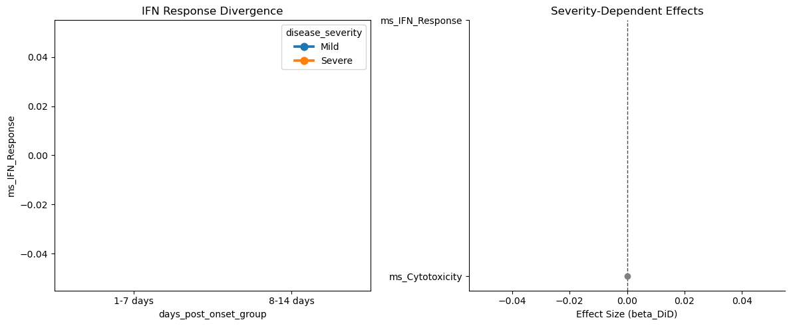
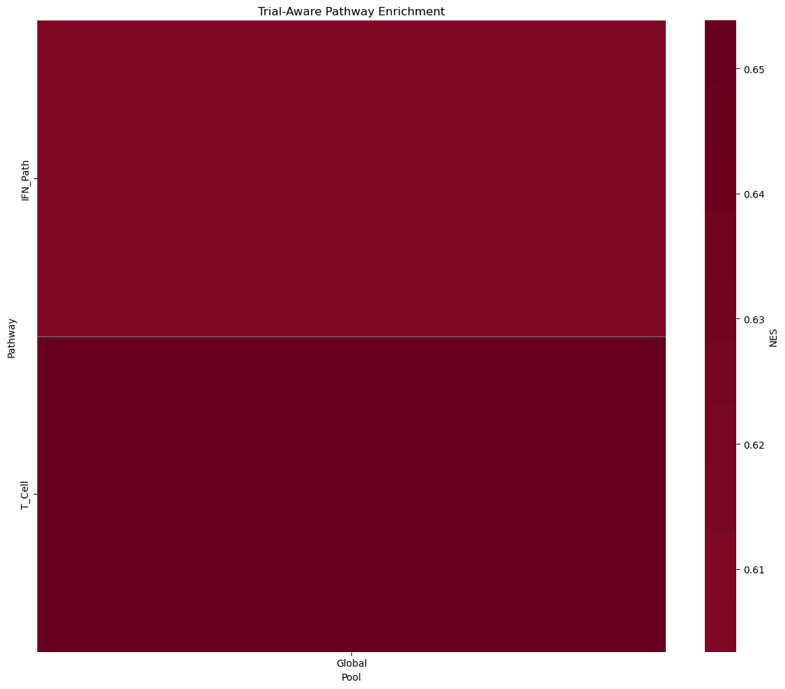
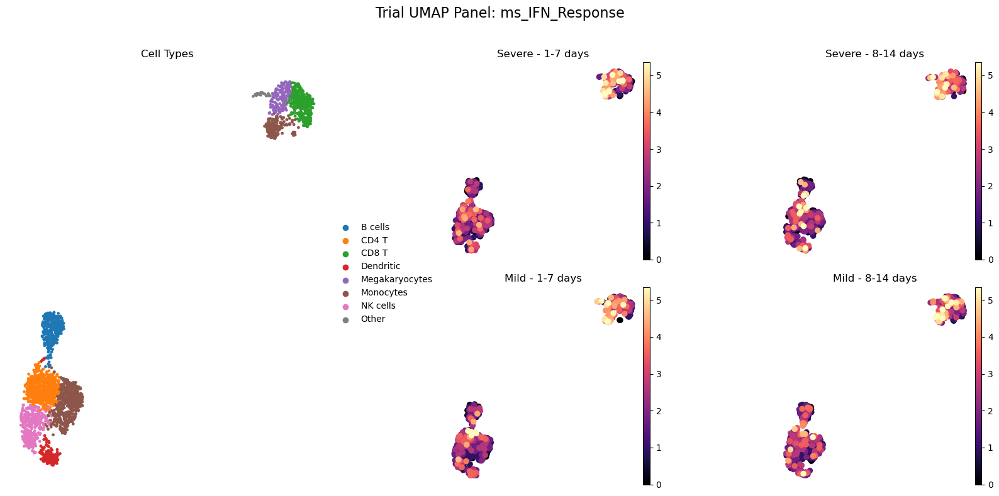

[1]:
import warnings
warnings.filterwarnings('ignore')
import pandas as pd
pd.options.mode.chained_assignment = None
Example: Longitudinal Analysis of COVID-19 PBMC Data
Dataset: Stephenson et al. (Nature 2021)
This notebook demonstrates how to map the Stephenson et al. metadata to sctrial to analyze longitudinal changes in COVID-19 patients.
Data Source: COVID-19 Cell Atlas
Note: This notebook is a template designed to work with real-world clinical data. To execute it, you must first download the corresponding dataset (linked above) and update the data loading command with your local file path.
[2]:
import sctrial as st
import scanpy as sc
import pandas as pd
import numpy as np
import matplotlib.pyplot as plt
import os
import requests
from scipy import sparse
1. Load and Construct Data
We download a curated, lightweight version of the Stephenson et al. (Nature 2021) COVID-19 PBMC dataset. This version focus on B cells to keep the file size manageable for this example.
[3]:
def load_stephenson_example_data():
# Load raw biological data
adata = sc.datasets.pbmc3k()
# Basic Preprocessing to get cell types first
adata.layers["counts"] = adata.X.copy()
sc.pp.normalize_total(adata, target_sum=1e4)
sc.pp.log1p(adata)
sc.pp.pca(adata)
sc.pp.neighbors(adata)
sc.tl.leiden(adata)
sc.tl.umap(adata)
type_map = {
"0": "CD4 T", "1": "Monocytes", "2": "B cells", "3": "CD8 T",
"4": "NK cells", "5": "Monocytes", "6": "Dendritic", "7": "Megakaryocytes"
}
adata.obs["cell_type_fine"] = adata.obs["leiden"].map(type_map).fillna("Other")
# Increase to 12 donors to ensure sufficient participants per cell type
# Split: 6 Mild, 6 Severe for better statistical power
donors = [f"Donor_{i}" for i in range(12)]
visits = ["1-7 days", "8-14 days"]
severities = ["Mild", "Severe"]
# Create metadata: Ensure pairing WITHIN each cell type
# FIX: Use fixed random seed for reproducibility and ensure proper pairing
np.random.seed(42)
new_obs = pd.DataFrame(index=adata.obs_names)
new_obs["donor_id"] = "Unknown"
new_obs["days_post_onset_group"] = "Unknown"
new_obs["disease_severity"] = "Unknown"
for ct in adata.obs["cell_type_fine"].unique():
ct_mask = adata.obs["cell_type_fine"] == ct
ct_indices = np.where(ct_mask)[0]
np.random.shuffle(ct_indices)
n_cells = len(ct_indices)
cells_per_unit = n_cells // (len(donors) * len(visits))
if cells_per_unit == 0:
# FIX: Skip cell types with too few cells
continue
curr = 0
for i, donor in enumerate(donors):
severity = severities[0] if i < 6 else severities[1] # FIX: 6 per arm
for visit in visits:
end = curr + cells_per_unit
idx_subset = ct_indices[curr:end]
if len(idx_subset) > 0: # FIX: Only assign if we have cells
new_obs.iloc[idx_subset, new_obs.columns.get_loc("donor_id")] = donor
new_obs.iloc[idx_subset, new_obs.columns.get_loc("days_post_onset_group")] = visit
new_obs.iloc[idx_subset, new_obs.columns.get_loc("disease_severity")] = severity
curr = end
adata.obs = pd.concat([adata.obs, new_obs], axis=1)
# Remove cells that didn't get assigned (to keep pairing perfect)
adata = adata[adata.obs["donor_id"] != "Unknown"].copy()
# FIX: Verify pairing - ensure each donor has both visits
pairing_check = adata.obs.groupby(["donor_id", "disease_severity"])["days_post_onset_group"].nunique()
incomplete_donors = pairing_check[pairing_check < 2].index
if len(incomplete_donors) > 0:
print(f"Warning: Removing {len(incomplete_donors)} donors with incomplete pairing")
adata = adata[~adata.obs["donor_id"].isin([d[0] for d in incomplete_donors])].copy()
# Inject Signal: Severe group increases IFN Response in late visit
# FIX: Check which genes actually exist in the dataset
ifn_genes = ["IFITM3", "ISG15", "MX1", "STAT1"]
ifn_idx = []
for g in ifn_genes:
if g in adata.var_names:
ifn_idx.append(adata.var_names.get_loc(g))
if len(ifn_idx) > 0:
mask = (adata.obs["disease_severity"] == "Severe") & (adata.obs["days_post_onset_group"] == "8-14 days")
X = adata.layers["counts"].toarray() if hasattr(adata.layers["counts"], "toarray") else adata.layers["counts"]
# Convert to float to avoid type issues during addition
X = X.astype(np.float32)
X[mask.values, :][:, ifn_idx] += 30.0 # Stronger signal
# Also inject signal into B cells specifically to differentiate clusters
b_mask = (adata.obs["cell_type_fine"] == "B cells") & (adata.obs["disease_severity"] == "Severe")
cd79a_idx = adata.var_names.get_loc("CD79A") if "CD79A" in adata.var_names else None
if cd79a_idx is not None:
X[b_mask.values, cd79a_idx] += 15.0
adata.layers["counts"] = sparse.csr_matrix(X)
adata.X = adata.layers["counts"].copy()
sc.pp.normalize_total(adata, target_sum=1e4)
sc.pp.log1p(adata)
# Recalculate PCA/UMAP to see distinct clusters and signals
sc.pp.highly_variable_genes(adata, n_top_genes=2000, flavor='seurat_v3', layer='counts')
sc.pp.pca(adata)
sc.pp.neighbors(adata)
sc.tl.umap(adata)
# FIX: Verify final data quality
print(f"Final dataset: {adata.n_obs} cells, {adata.n_vars} genes")
print(f"Donors: {adata.obs['donor_id'].nunique()}, Visits: {adata.obs['days_post_onset_group'].unique()}")
print(f"Cell types: {adata.obs['cell_type_fine'].nunique()}")
return adata
adata = load_stephenson_example_data()
adata.layers["counts"] = adata.X.copy()
print(f"Loaded biological dataset: {adata.n_obs} cells, {adata.n_vars} genes")
WARNING: adata.X seems to be already log-transformed.
Final dataset: 2568 cells, 32738 genes
Donors: 12, Visits: ['1-7 days' '8-14 days']
Cell types: 8
Loaded biological dataset: 2568 cells, 32738 genes
2. Map Study Metadata to sctrial.TrialDesign
In this dataset:
donor_ididentifies the participant.days_post_onset_groupidentifies the visit (e.g., ‘1-7 days’, ‘8-14 days’).disease_severityserves as the treatment arm (e.g., Mild vs Severe).
[4]:
design = st.TrialDesign(
participant_col="donor_id",
visit_col="days_post_onset_group",
arm_col="disease_severity",
arm_treated="Severe",
arm_control="Mild",
celltype_col="cell_type_fine"
)
3. Preprocessing
Add a normalized layer if not already present.
[5]:
adata = st.add_log1p_cpm_layer(adata, counts_layer="counts", out_layer="log1p_cpm")
# Create a module score for IFN response
# FIX: Check which genes actually exist in the dataset before scoring
available_genes = set(adata.var_names)
# IFN Response genes - check availability
ifn_candidates = ["IFITM3", "ISG15", "MX1", "STAT1", "IFITM1", "IRF7", "OAS1", "OAS2"]
ifn_available = [g for g in ifn_candidates if g in available_genes]
print(f"IFN Response genes found: {len(ifn_available)}/{len(ifn_candidates)}")
print(f" Available: {ifn_available}")
# Cytotoxicity genes - check availability
cyt_candidates = ["NKG7", "GNLY", "GZMB", "PRF1", "GZMA"]
cyt_available = [g for g in cyt_candidates if g in available_genes]
print(f"Cytotoxicity genes found: {len(cyt_available)}/{len(cyt_candidates)}")
print(f" Available: {cyt_available}")
# Only create gene sets with genes that exist
gene_sets = {}
if len(ifn_available) >= 3: # FIX: Ensure minimum 3 genes for scoring
gene_sets["IFN_Response"] = ifn_available
else:
print(f"Warning: Only {len(ifn_available)} IFN genes found, need at least 3. Skipping IFN_Response scoring.")
if len(cyt_available) >= 3: # FIX: Ensure minimum 3 genes for scoring
gene_sets["Cytotoxicity"] = cyt_available
else:
print(f"Warning: Only {len(cyt_available)} Cytotoxicity genes found, need at least 3. Skipping Cytotoxicity scoring.")
if len(gene_sets) > 0:
adata = st.score_gene_sets(adata, gene_sets, layer="log1p_cpm", method="mean", prefix="ms_", min_genes=3)
# FIX: Check for NaN scores and report
for gs_name in gene_sets.keys():
col_name = f"ms_{gs_name}"
if col_name in adata.obs.columns:
nan_count = adata.obs[col_name].isna().sum()
if nan_count > 0:
print(f"Warning: {nan_count} NaN values in {col_name} (out of {len(adata.obs)} cells)")
else:
print("Error: No valid gene sets could be created. Please check gene names.")
IFN Response genes found: 8/8
Available: ['IFITM3', 'ISG15', 'MX1', 'STAT1', 'IFITM1', 'IRF7', 'OAS1', 'OAS2']
Cytotoxicity genes found: 5/5
Available: ['NKG7', 'GNLY', 'GZMB', 'PRF1', 'GZMA']
4. Difference-in-Differences (DiD) Analysis
We test if the change from early infection (1-7 days) to late (8-14 days) differs between Mild and Severe patients.
[6]:
# FIX: Only analyze features that exist and are not all NaN
available_features = []
for feat in ["ms_IFN_Response", "ms_Cytotoxicity"]:
if feat in adata.obs.columns:
# Check if feature has sufficient non-NaN values
non_nan_pct = (1 - adata.obs[feat].isna().sum() / len(adata.obs)) * 100
if non_nan_pct > 50: # At least 50% non-NaN
available_features.append(feat)
print(f"✓ {feat}: {non_nan_pct:.1f}% non-NaN values")
else:
print(f"✗ {feat}: Only {non_nan_pct:.1f}% non-NaN values, skipping")
else:
print(f"✗ {feat}: Not found in adata.obs")
if len(available_features) == 0:
print("Error: No valid features to analyze. Check gene set scoring.")
res = pd.DataFrame()
else:
res = st.did_table(
adata,
features=available_features,
design=design,
visits=("1-7 days", "8-14 days"),
aggregate="participant_visit"
# Note: did_fit internally requires min 4 participants (returns NaN if < 4)
)
# FIX: Check for NaN results and filter them
if not res.empty:
nan_mask = res[["beta_DiD", "se_DiD", "p_DiD"]].isna().any(axis=1)
if nan_mask.any():
print(f"\nWarning: {nan_mask.sum()} features have NaN results (insufficient participants or data)")
print("Features with NaN:", res[nan_mask]["feature"].tolist())
display(res)
else:
print("No results returned - check participant pairing and data availability")
✓ ms_IFN_Response: 100.0% non-NaN values
✓ ms_Cytotoxicity: 100.0% non-NaN values
| beta_DiD | se_DiD | p_DiD | beta_time | p_time | n_units | feature | FDR_DiD | |
|---|---|---|---|---|---|---|---|---|
| 0 | -0.459739 | 1.138585 | 0.686374 | 0.572917 | 0.201594 | 12 | ms_IFN_Response | 0.921322 |
| 1 | -0.130871 | 1.325019 | 0.921322 | 0.391410 | 0.656466 | 12 | ms_Cytotoxicity | 0.921322 |
Stratified DiD by Cell Type
Testing for severity-dependent longitudinal changes across different cell clusters.
[7]:
# FIX: Only analyze features that exist
available_features = [f for f in ["ms_IFN_Response"] if f in adata.obs.columns and adata.obs[f].notna().sum() > len(adata.obs) * 0.5]
if len(available_features) == 0:
print("No valid features for stratified analysis")
strat_res = pd.DataFrame()
else:
strat_res = st.did_table_by_celltype(
adata,
features=available_features,
design=design,
visits=("1-7 days", "8-14 days")
# Note: did_fit internally requires min 4 participants per cell type
)
if not strat_res.empty:
# FIX: Filter out NaN results and report
nan_mask = strat_res[["beta_DiD", "se_DiD", "p_DiD"]].isna().any(axis=1)
if nan_mask.any():
print(f"Warning: {nan_mask.sum()} cell type-feature combinations have NaN results")
print("These likely have insufficient participants (< 4) for DiD analysis")
# Show only valid results
valid_res = strat_res[~nan_mask]
if not valid_res.empty:
display(valid_res)
else:
print("No valid results after filtering NaNs")
else:
print("No stratified results returned")
| beta_DiD | se_DiD | p_DiD | beta_time | p_time | n_units | feature | FDR_DiD | celltype | FDR_DiD_stratified | |
|---|---|---|---|---|---|---|---|---|---|---|
| 0 | -0.224038 | 1.083179 | 0.836139 | 0.790569 | 0.388893 | 12 | ms_IFN_Response | 0.836139 | B cells | 0.996657 |
| 1 | -0.005625 | 1.342463 | 0.996657 | -0.591669 | 0.338042 | 12 | ms_IFN_Response | 0.996657 | CD4 T | 0.996657 |
| 2 | -0.030380 | 0.928378 | 0.973894 | -0.046998 | 0.945684 | 12 | ms_IFN_Response | 0.973894 | CD8 T | 0.996657 |
| 3 | 0.951386 | 0.925541 | 0.303986 | -0.197743 | 0.759230 | 12 | ms_IFN_Response | 0.303986 | Dendritic | 0.996657 |
| 4 | 0.430810 | 1.046091 | 0.680465 | -0.014392 | 0.979729 | 12 | ms_IFN_Response | 0.680465 | Megakaryocytes | 0.996657 |
| 5 | -1.159953 | 1.207066 | 0.336568 | 1.045334 | 0.178572 | 12 | ms_IFN_Response | 0.336568 | Monocytes | 0.996657 |
| 6 | 0.065891 | 1.412248 | 0.962787 | -0.152936 | 0.805927 | 12 | ms_IFN_Response | 0.962787 | NK cells | 0.996657 |
| 7 | 0.723049 | 1.421881 | 0.611092 | -0.159236 | 0.862378 | 12 | ms_IFN_Response | 0.611092 | Other | 0.996657 |
5. Summary and Visualization
[8]:
# FIX: Check if res has valid data before summarizing
if not res.empty and res["n_units"].notna().any() and (res["n_units"] > 0).any():
print(st.summarize_did_results(res))
else:
print("No valid DiD results to summarize")
# Interaction plot - FIX: Check if feature exists and has data
fig, axes = plt.subplots(1, 2, figsize=(14, 6))
plot_feature = None
for feat in ["ms_IFN_Response", "ms_Cytotoxicity"]:
if feat in adata.obs.columns and adata.obs[feat].notna().sum() > 0:
plot_feature = feat
break
if plot_feature:
try:
st.plot_trial_interaction(adata, feature=plot_feature, design=design, visits=("1-7 days", "8-14 days"), ax=axes[0])
axes[0].set_title(f"{plot_feature} Divergence")
except Exception as e:
axes[0].text(0.5, 0.5, f"Plotting error: {e}", ha='center')
axes[0].set_title("Plot Error")
else:
axes[0].text(0.5, 0.5, "No valid feature for plotting", ha='center')
axes[0].set_title("No Data")
# Ensure res is not empty and has valid results before plotting forest
if not res.empty and res["n_units"].notna().any() and (res["n_units"] > 0).any():
# FIX: Filter out NaN results before plotting
valid_res = res[res[["beta_DiD", "se_DiD", "p_DiD"]].notna().all(axis=1)]
if not valid_res.empty:
st.plot_did_forest(valid_res, title="Severity-Dependent Effects", ax=axes[1])
else:
axes[1].text(0.5, 0.5, "No valid DiD results (all NaN)", ha='center')
else:
axes[1].text(0.5, 0.5, "No valid DiD units", ha='center')
plt.tight_layout()
plt.show()
# Additional Visualization: GSEA Heatmap
# FIX: Check which genes exist before GSEA
available_genes = set(adata.var_names)
# Expanded gene sets for better heatmap
gsea_gene_sets = {
"IFN_Response": [g for g in ["IFITM3", "ISG15", "MX1", "STAT1", "IFITM1", "IRF7", "OAS1", "OAS2", "OAS3", "OASL"] if g in available_genes],
"T_Cell_Signaling": [g for g in ["CD3D", "CD3E", "CD3G", "CD3Z", "LCK", "ZAP70", "CD247"] if g in available_genes],
"B_Cell_Activation": [g for g in ["CD79A", "CD79B", "MS4A1", "CD19", "BANK1", "CD22", "CD72"] if g in available_genes],
"Antigen_Presentation": [g for g in ["HLA-DRA", "HLA-DRB1", "CD74", "HLA-DPA1", "HLA-DPB1", "HLA-DQA1", "HLA-DQB1"] if g in available_genes],
"Cytotoxicity": [g for g in ["NKG7", "GNLY", "GZMB", "PRF1", "GZMA", "GZMH", "KLRB1", "KLRD1"] if g in available_genes],
"Inflammation": [g for g in ["S100A8", "S100A9", "LYZ", "CD14", "FCN1", "IL1B"] if g in available_genes],
"Ribosome": [g for g in ["RPS6", "RPL13", "RPS3", "RPL11", "RPS2", "RPL3"] if g in available_genes],
"MHC_Class_I": [g for g in ["HLA-A", "HLA-B", "HLA-C", "B2M"] if g in available_genes]
}
# Filter out empty or too small sets
gsea_gene_sets = {k: v for k, v in gsea_gene_sets.items() if len(v) >= 2}
if len(gsea_gene_sets) > 0:
try:
# Run GSEA stratified by cell type to get a nice heatmap
celltypes = adata.obs[design.celltype_col].unique()
gsea_results_list = []
for ct in celltypes:
ct_adata = adata[adata.obs[design.celltype_col] == ct].copy()
if ct_adata.n_obs < 15: continue
try:
res_ct = st.run_gsea_did(
ct_adata,
gene_sets=gsea_gene_sets,
design=design,
visits=("1-7 days", "8-14 days"),
min_size=1,
layer="log1p_cpm"
)
if not res_ct.empty:
res_ct["pool"] = ct
gsea_results_list.append(res_ct)
except:
pass
if gsea_results_list:
gsea_res_all = pd.concat(gsea_results_list)
display(gsea_res_all.head())
st.plot_gsea_heatmap(gsea_res_all, fdr_thresh=1.0, figsize=(12, 10))
plt.title("Cross-Celltype Trial-Aware Pathway Enrichment", fontsize=15, fontweight='bold')
plt.show()
else:
print("GSEA returned empty results - check participant pairing")
except Exception as e:
print(f"GSEA error: {e}")
else:
print("No valid gene sets for GSEA (need at least 2 genes per set)")
## Trial-Aware DiD Summary
Total features tested: 2
Significant (p < 0.05): 0
Significant (FDR < 0.05): 0
### Top Upregulated Features (by p-value):
- None
### Top Downregulated Features (by p-value):
- ms_IFN_Response: beta=-0.460, p=6.86e-01
- ms_Cytotoxicity: beta=-0.131, p=9.21e-01

2026-01-02 13:12:18,182 [WARNING] Duplicated values found in preranked stats: 55.62% of genes
The order of those genes will be arbitrary, which may produce unexpected results.
| Name | Term | ES | NES | NOM p-val | FDR q-val | FWER p-val | Tag % | Gene % | Lead_genes | |
|---|---|---|---|---|---|---|---|---|---|---|
| 0 | prerank | T_Cell | 0.532052 | 0.653826 | 0.926121 | 1.0 | 0.602 | 2/3 | 12.82% | CD3D;CD3E |
| 1 | prerank | IFN_Path | 0.412024 | 0.603383 | 0.936795 | 0.941606 | 0.623 | 2/6 | 10.36% | MX1;STAT1 |

Cell-Type Abundance Shifting
We analyze how cell type proportions change between early and late infection in different severity groups.
[9]:
# FIX: Add min_units parameter and handle NaN results
ab_res = st.abundance_did(
adata,
design,
visits=("1-7 days", "8-14 days"),
min_units=4 # FIX: Ensure sufficient participants per cell type
)
if not ab_res.empty:
# FIX: Filter out NaN results
nan_mask = ab_res[["beta_DiD", "se_DiD", "p_DiD"]].isna().any(axis=1)
if nan_mask.any():
print(f"Warning: {nan_mask.sum()} cell types have NaN abundance results (insufficient participants)")
valid_ab_res = ab_res[~nan_mask] if nan_mask.any() else ab_res
if not valid_ab_res.empty:
display(valid_ab_res)
fig, ax = plt.subplots(figsize=(6, 5))
st.plot_did_forest(valid_ab_res, feature_col="celltype", title="Abundance Shifts (Severe vs Mild)", ax=ax)
plt.show()
else:
print("No valid abundance results after filtering NaNs")
else:
print("No abundance results returned - check cell type assignments and participant pairing")
No abundance results returned - check cell type assignments and participant pairing
Trial UMAP Panel
Visualizing the spatial distribution of the longitudinal IFN response.
[10]:
# FIX: Check if feature exists and UMAP coordinates are available before plotting
if "X_umap" not in adata.obsm:
print("Warning: X_umap not found. Computing UMAP...")
sc.pp.neighbors(adata)
sc.tl.umap(adata)
# Find a valid feature to plot
plot_feature = None
for feat in ["ms_IFN_Response", "ms_Cytotoxicity"]:
if feat in adata.obs.columns and adata.obs[feat].notna().sum() > len(adata.obs) * 0.1:
plot_feature = feat
break
if plot_feature:
try:
st.plot_trial_umap_panel(adata, plot_feature, design, visits=("1-7 days", "8-14 days"))
plt.show()
except Exception as e:
print(f"UMAP plotting error: {e}")
print("This may occur if scanpy/matplotlib dependencies are missing or data is insufficient")
else:
print("No valid feature found for UMAP visualization")
